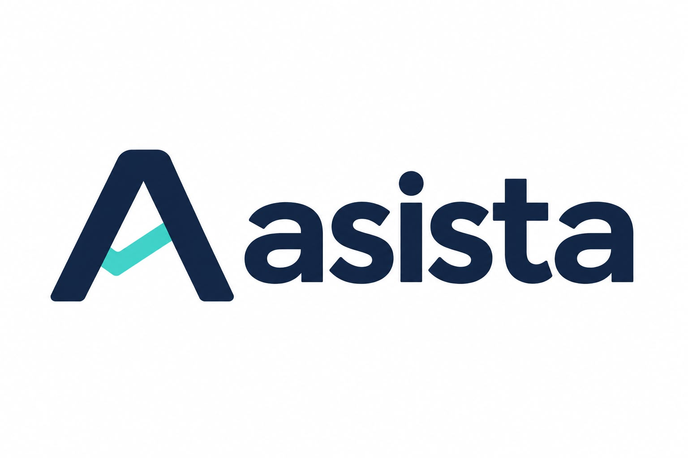
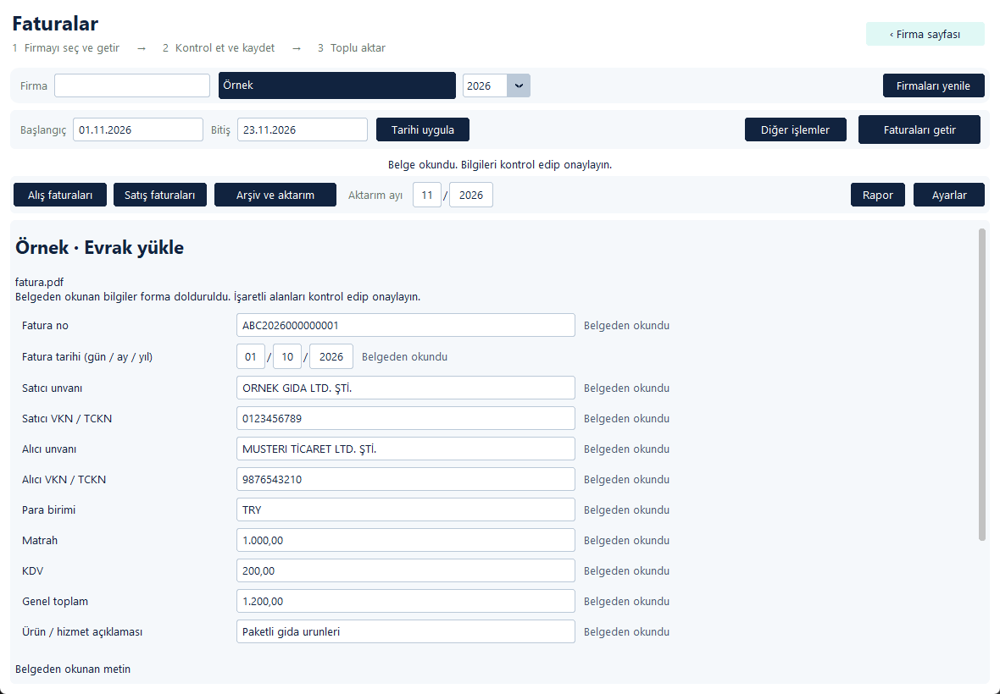
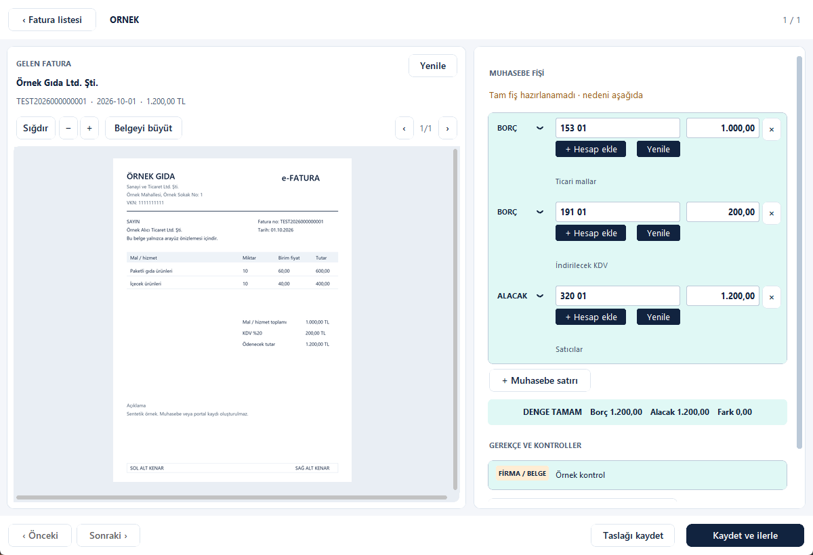
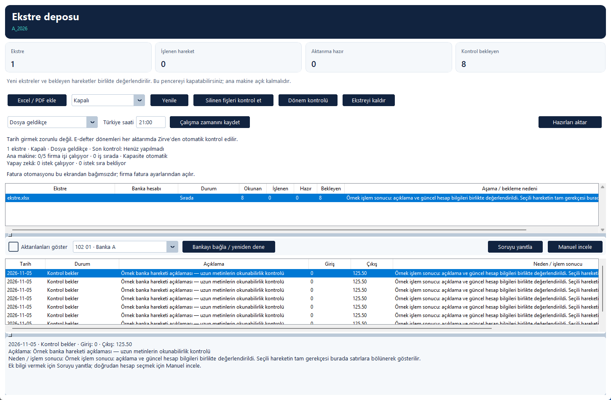

Bilgiyi yeniden
yazma yükü.
XML, PDF ve görüntülerdeki fatura bilgilerini okur, alanların doldurulmasına yardımcı olur. Siz belgeyle karşılaştırıp eksik veya hatalı bilgiyi düzeltirsiniz.
Daha az tekrar eden veri girişi
Asista’yı yakından görünMALİ MÜŞAVİRLER İÇİN YAPAY ZEKÂ DESTEĞİ
Belgeyi okumak, aynı bilgiyi tekrar yazmak, ekstreleri hazırlamak… Asista tekrar eden işleri kolaylaştırır. Size inceleme, karar ve müşterinize değer katma alanı açar.
GÜN SONU RAPORU
Z RAPORU
TEMSİLİ GÖRSEL
RESMÎ BELGE DEĞİLDİR

ASİSTA NE YAPAR?
Asista, fatura ve banka belgelerini muhasebe kaydına hazırlamanıza yardımcı olur. Okunan bilgileri, hesap önerilerini ve kontrol bekleyen kayıtları görünür kılar.
XML, PDF ve görüntülerdeki fatura bilgilerini okur, alanların doldurulmasına yardımcı olur. Siz belgeyle karşılaştırıp eksik veya hatalı bilgiyi düzeltirsiniz.
Daha az tekrar eden veri girişiDesteklenen Excel ve PDF ekstrelerini içeri alır. Hareketleri hesaplarla birlikte değerlendirir; hazırlanan ve kontrol bekleyen kayıtları ayırır.
Daha düzenli banka hazırlığıHesap önerilerini ve gerekçelerini incelemenize yardımcı olur. Hangi kaydın beklediğini, hazırlandığını veya aktarıldığını aynı çalışma düzeninde takip edersiniz.
Daha görünür iş takibiASİSTA’NIN İÇİNDEN
Aşağıdaki görüntüler Asista’dan alınmıştır. Firma ve belge bilgileri örnektir.
Bir ekrana tıklayarak tam boyutunda inceleyebilirsiniz.
Fatura numarası, tarih, satıcı, tutar ve vergi bilgileri belge üzerinden okunur. Doldurulan alanları görür, belgeyle karşılaştırır ve onaylarsınız.
Görüntüden okuma doğruluğu belge kalitesine bağlıdır.
Ekranı büyük aç ↗Fatura görüntüsü ile borç, alacak, vergi ve karşı hesap satırlarını birlikte inceleyin. Dengeyi ve kontrol gerekçelerini görün; gerekli düzenlemeleri yapın.
Bu örnek, kullanıcı incelemesi bekleyen bir taslağı gösterir.
Ekranı büyük aç ↗
Yüklenen ekstreleri, okunan hareketleri ve kontrol bekleyen kayıtları birlikte izleyin. Bekleme gerekçesine ulaşın; ihtiyaç duyan hareketi incelemeye alın.
Ekranı büyük aç ↗
YAPAY ZEKÂ, MESLEKİ BAKIŞINIZLA BİRLİKTE
Asista, belge ve işlem bağlamından yararlanarak hesap önerileri hazırlar. Öneriyi gerekçesiyle görmenizi, belirsiz noktaları fark etmenizi ve kaydı düzenlemenizi sağlar.
Vergisel değerlendirme, hesabın uygunluğu ve son kontrol mali müşavirin sorumluluğundadır. Yapay zekâ önerileri hatasızlık garantisi taşımaz.
NEDEN ASİSTA?
İyi muhasebe yalnızca kayıt yetiştirmek değildir. İncelemek, anlamlandırmak ve müşteriye doğru zamanda yol göstermek için de alan gerekir.
Belge hazırlığı, tekrar eden veri girişi ve kayıt takibini kolaylaştırarak mali müşavirlerin uzmanlık gerektiren işlere daha fazla odaklanmasına yardımcı olmak.
Yapay zekâ desteğinin mesleki deneyimle birlikte çalıştığı; her önerinin dayanağının görülebildiği ve ofiste işin durumunun kolayca takip edildiği bir çalışma düzeni oluşturmak.
AKLINIZDA KALMASIN
Mevcut Windows uygulaması Zirve muhasebe altyapısıyla çalışır. Kurulumda firma bağlantısı, hesap planı ve erişim yetkileri tanımlanır.
İşleyiş otomasyon ayarlarına ve kayıt kontrollerine bağlıdır. Eksik veya belirsiz kayıtlar inceleme bekler; hazırlanan fişleri düzenleyebilirsiniz.
Evet. Arka plan işlerinin çalışması için ofisin ana makinesi ve Asista servisi açık olmalıdır. Terminaller kendi ana makinelerine bağlanır.
Hayır. Uygulama ekranları gerçektir; gösterilen firma ve işlem verileri örnektir. Fatura ve Z raporu kompozisyonları tanıtım amaçlıdır. Z raporu görseli, ayrı bir Z raporu işleme özelliği vaadi değildir.